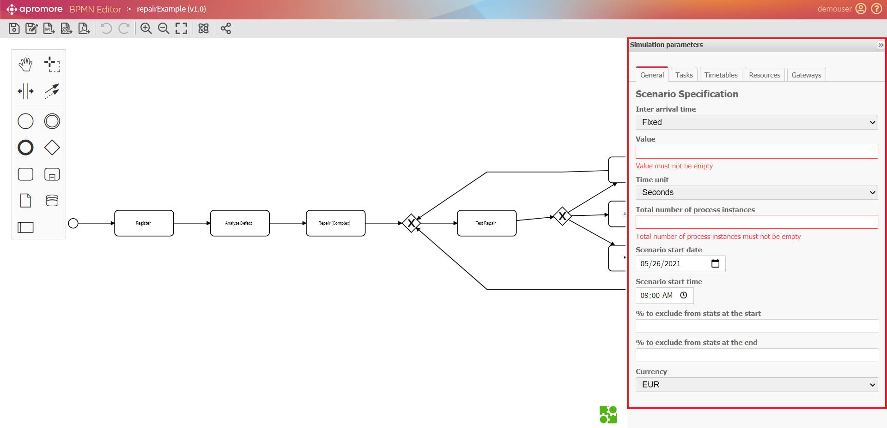
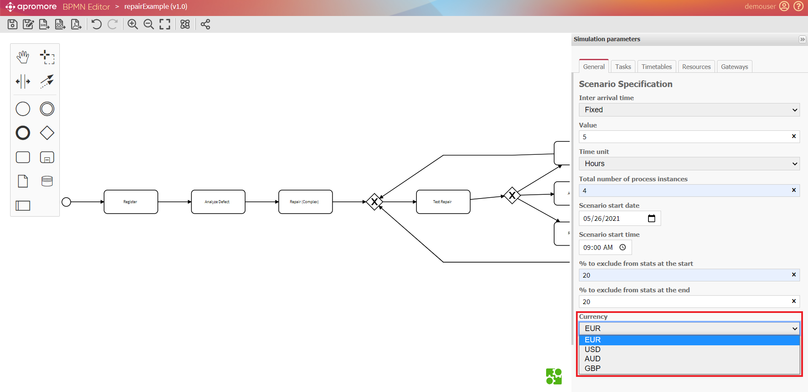
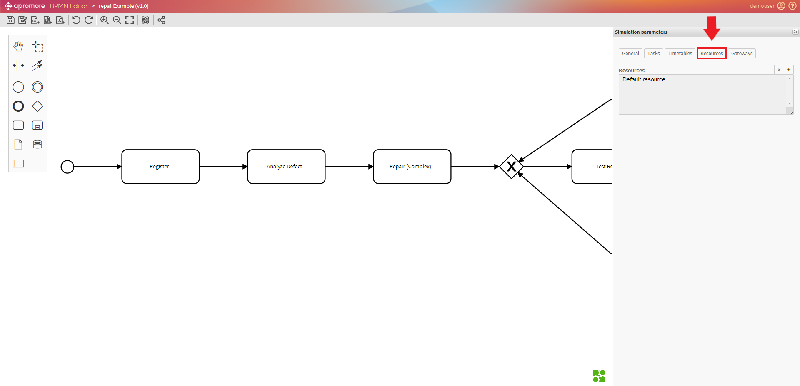
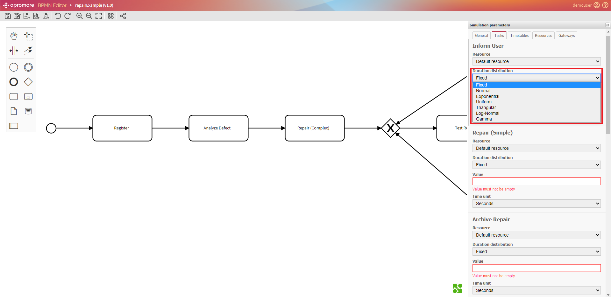
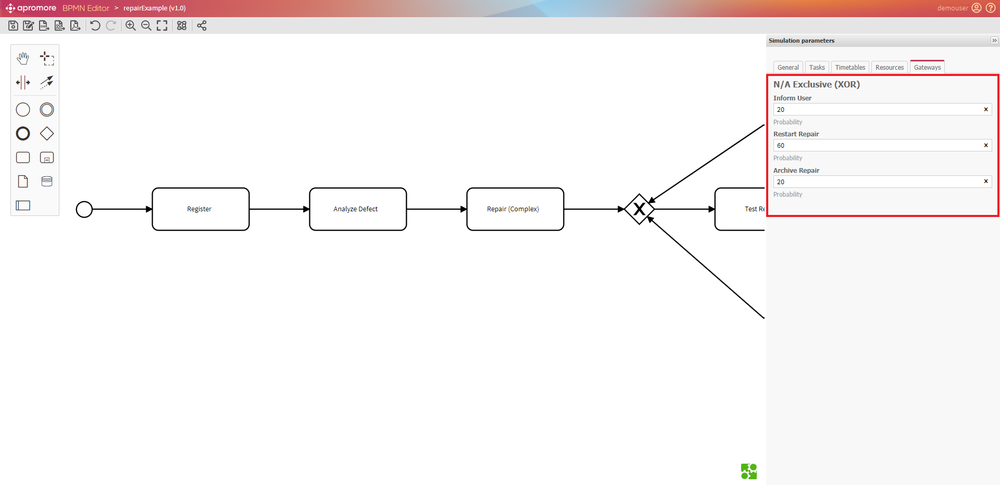
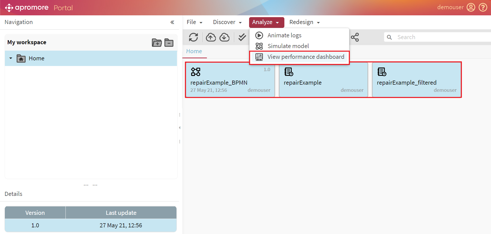
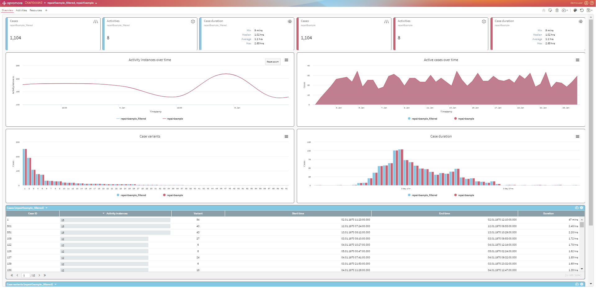

Simulate process
Apromore allows users to simulate .bpmn models to understand how the business process will look and work in different scenarios.
We can do the simulation of process models in Apromore by performing two steps:
Specification of simulation parameters
Creation of simulated log
Double-click the BPMN model to open it.

A window will open up, showing the selected BPMN model.

Specification of simulation parameters
To specify simulation parameters, click on the Toggle simulation parameters panel button.
The simulation panel with different parameters to be specified will appear from the BPMN editor window’s right side

Note
If we want to hide the parameters panel, we can always click on the “>>” sign located at the right side of the panel and click on it once again to make it visible.

The parameters are organized into different tabs. For convenience, it is recommended to fill it in the following order: General -> Timetables -> Resources -> Tasks -> Gateways.
Note
We can`t proceed without the specification of the mandatory parameters. These are marked red.

General parameters tab
The inter-arrival time is the time between each arrival of the process instances. It shows how frequently a new process instance starts.
Apromore offers a variety of options for inter-arrival time, as shown below.

The value denotes the inter-arrival time unit. In the following example, the inter-arrival time is fixed and equals 5 hours, meaning that a new process instance starts every 5 hours.

The total number of process instances shows how many BPMN process instances start in the simulation scenario.

Note
For preventing us from entering incorrect values, Apromore displays inline alert messages signaling that we need to recheck the data.

We can specify the simulated scenario start date and time to determine when the first process starts.

We can exclude a certain percentage of statistics from the start and the end of the process instances that fall between the start and the end time of the simulation scenario. This is usually done, considering the availability of resources and activities that are handled without any delays.

For the cost calculations, we may choose a suitable currency from the drop-down list.

Timetables, Resources and Tasks parameters tabs
After we finished entering the general tab information, we then switch to the Timetables tab.

While adding the new timetable, it is required to name it and specify the working timeslot

Note
One timetable may consist of many different timeslots. This is very useful when workers (also known as actors/resources) work in shifts.
In the example below, workers who follow “Timeslot 3” from “Timetable-1” work five days (Monday-Friday) from 8.00 till 17.00.

In the “Resources” tab, the default resource is created automatically.

To add the new resource, select it from the list and press “+”. To delete it, select and then press “x”.

Specify all the resource details required in the new resource window, which loads right after clicking on “+”.

Number of Resources is the amount of the new resource type actors participating in this scenario. Cost per hour is the amount the resource earns per hour working.
A timetable is assigned to a resource from the Resource timetable drop-down list.

After we finished entering the information in the Resources tab, we then switch to the Tasks tab.

Click on a task in the BPMN model in order to set the simulation parameters for the task. The simulation parameters of a task are:
The resource pool responsible for performing this task
The probability distribution of the task duration and the parameters of this distribution (e.g. the mean in the case of an exponential distribution).The duration of the task is the time it takes for a resource to execute one instance of a task. Please note that the duration of a task must not include the waiting time before the start of the task. It should only include the processing time.

Note
For a model to be simulated, the tasks must be untyped (Abstract). Apromore does not currently support the simulation of process models where some of the tasks have a type such as User task, Service task, etc.
We can use an alternative approach for more complex models by just clicking on the task we would like to change. The task details window will open automatically.

Gateways
Gateways is a BPMN notation used to control how a process flows. Gateways can be exclusive (XOR), meaning that precisely one alternative path can be selected or inclusive (OR), meaning that there can be several paths.

All gateway elements in the BPMN model require execution probabilities for their outgoing sequence flows.

Note
The sum of the probabilities for the execution of each gateway must be 100%.

After we entered the simulation parameters, we can save the model.

When the save dialog appears, click OK.

To simulate the saved model, go to the main workspace -> Analyze -> Simulate model.

To save the simulated log, click on Save.

The simulated log appears in the workspace.

Note
Suppose, for some reason (for instance, the model was quite complex with the variety of tasks and many resources), we ignored the mandatory data lines and didn`t specify them before. In that case, Apromore will display the list of errors to correct them.

We can view a range of statistics for simulated logs, including case duration, case duration within timetable, case waiting time, cycle time, waiting time, and cost in dashboards.

In addition to this, we can simulate two what-if scenarios. We can then compare the simulated logs by animating 2 logs against the BPMN model by going to the main workspace, selecting 2 logs and BPMN model -> Analyze -> Simulate model.

A window will open up, showing the simulation overview.
